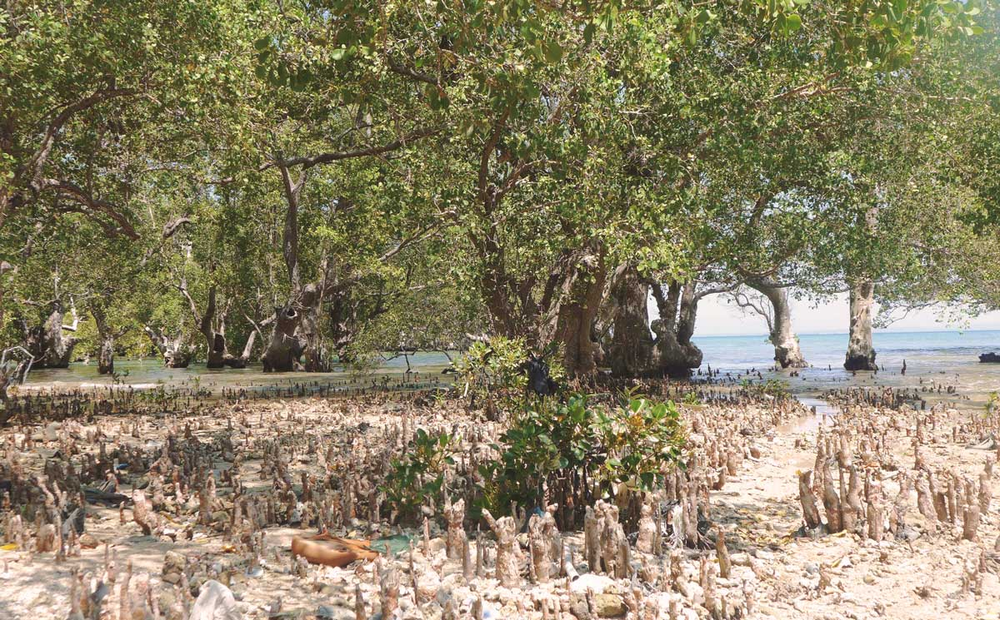
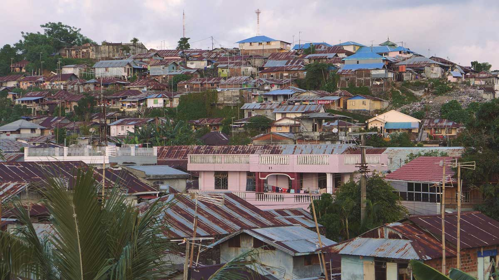

Indonesia Development Boom Ignores Community Voices
Feature by Paulista Surjadi
August 2015
Indonesian cities are being developed at a rapid pace, yet the communities most affected by the shopping malls, resorts and commercial building that are sprouting are having little say in how their environment should be shaped. There is growing alarm of the environmental and social consequences of development that is exclusive of communities, leaving investors as the sole winner, undermining the promise of benefits for the local communities.
Bali: An Island Paradise at Threat
Luxury hotels, rollercoaster rides and a Formula One circuit on a tropical island—it might sound like paradise to some, but for the communities on Indonesia’s Bali island, it’s an environmental disaster waiting to happen.

Indonesian developer Tirta Wahana Bali Internasional is planning to reclaim 833 hectares of land to build such a resort in Benoa Bay, part of the world-famous Nusa Dua resort.
But civil society group ForBALI says the $2.5 billion project will dramatically change the character of southern Bali and lead to sea level rises, inundating low-lying villages nearby, a claim backed by a Conservation International audit of the plan.
It will also destroy 700 hectares of once-protected mangrove wetlands, a type of underwater forest rich in biodiversity and carbon, which is emitted into the atmosphere when destroyed, contributing to climate change. These changes come with social impacts, as the project clashes with the local culture and tranquility that draws millions to the island each year.

ForBALI has fought the proposed project since 2013, bringing together citizen activists, academics, politicians, local leaders, artists and musicians under the campaign Tolak Reklamasi (Reject the Reclamation), demanding the plan be scrapped.
It has used regular public protests, concerts, cultural events and social media to reach the public and communities affected by the proposed development, in what is possibly Indonesia’s most active citizen-driven movements in local governance.
It started out with 25 supporters and now has 7,000 from around Indonesia, also gaining the attention of international environmental groups.
“The movement is a test of the democratic process in Indonesia, as well as an exercise in citizen participation,” ForBALI coordinator Wayan “Gendo” Suardana told Kota Kita.
“Tolak Reklamasi aims to shows the potential environmental and social damage of land reclamation, but also the importance of civic responsibility to participate in the urban governance and challenge the opaque decision-making processes that are going on,” Suardana said.
“Kota Kita supports ForBALI’s efforts to mobilize citizens, raise awareness about environmental issues in Bali, and advocate for a more democratic approach to development. We look forward to working with and promoting efforts like these; our future is within the hands of people who are willing to stand up, voice their opinions, and promote a sustainable and just Indonesia.” Ahmad Rifai, Director of Kota Kita said.
Bali attracts up to 10 million international and domestic tourists each year and concern is growing that it is becoming overcrowded — both for tourists and local communities. ForBALI says the last thing the island needs is more hotels.
In the popular south of the Island, hotel rooms rose from 22,000 in 2011 to almost 55,000 in 2014. There are believed to be thousand more unregistered room.
Nonetheless, at least 67 hotels are approved for building in 2016.
This is despite the fact there is a moratorium issued in 2011 by the Bali Governor Made Mangku on development in place. It was issued to regulate new hotel development in southern Bali, but is often ignored by the regency officials who issue building permits in pursuit of higher revenues, often in greenbelt areas where development is banned.
The Benoa Bay plan was made possible in 2014 when the president issued a resolution that changed the bay’s protected greenbelt status to a zone for “revitalization”, a word activists say is a euphemism for development.
Despite the widespread support for Tolak Reklamasi Suardana says “our collective work is not over”, adding he won’t give up until the project is shelved.

Makassar: Indonesia’s Projected City of Tomorrow?
As the bustling Indonesian capital Jakarta is stretched to its limits, with choking traffic, overdevelopment and aging infrastructure, the country plans to make the city of Makassar its second power hub.
Situated on the southeastern coat of Sulawesi Island, right in the centre of the sprawling Indonesian archipelago, Makassar is already a bustling centre for trade, business, industry and new developments, and is seen as a gateway to the nation’s developing east.
It has already built an international airport, toll roads and an integrated business complex in recent years, and now there are plans to increase the city size by 20 percent, in a land reclamation megaproject that will exacerbate climate change impacts already hitting communities hard.
But a Kota Kita study found that these rapid developments are only going to exacerbate the impact that climate change is already having on communities, and warned that the poorest communities would be most profoundly affected.
Traditional fishing communities in Makassar are at the frontline of climate change, as sea levels are expected to rise, threatening inundation of these communities’ villages and severely damage to the marine ecosystems, reducing the fish stocks they rely on for a livelihood.
The study focused on the level of vulnerability of these communities, measuring and mapping by neighborhood the susceptibility to climate change impacts, assessing the capacity of a range of governmental, civil society and community bodies dealing with climate hazards.
It also looked at how communities are adapting to changes to ecosystems they rely on, focusing on watersheds and wetlands, which play an essential role in minimizing sensitivity to climate change impacts for poor and vulnerable communities.
Land reclamation projects only worsen these problems, the study found — they involve taking land from the periphery and dumping it in the sea to create landfill, in many cases pushing the sea level up further.
Developments along Makassar’s coastal wetlands also threaten to block some communities’ access to the ocean and to force people out from their homes as eviction of poor communities in Indonesia is common, in the case of major developments.
Local communities say there is disconnect between their needs and the development plans. In the past, when fishing communities have been evicted to make way for development projects, they have not been offered roles in the city’s rapid transformation. They are forced into informal sectors where income is tenuous and not necessarily sustainable. The assessment expresses concern that this trend could lead to larger social problems, including limited job opportunities and poverty.
“As development projects go forward and cities are rapidly urbanized in Indonesia, most of the time no process of public consultation has taken place at all, so the vulnerability of poor communities grows immensely,” Kota Kita Executive Director Ahmad Rifai said.
“Makassar’s city leadership must articulate a coherent vision for the city that promotes resilience and pro-poor development. Such a vision can facilitate better coordination between city departments and city stakeholders, including its citizens,” he said.
The first stage of land reclamation project — CitraLand City Losari Makassar — will be developed in 2018 on 107 hectares of reclaimed land, part of a larger, 1,000-hectare integrated business district called Center Point of Indonesia (CPI). CitraLand City Makassar is designed as Makassar’s “new town”, with modern facilities, housing and commercial areas, including office buildings, hotels and shopping malls.
Makassar’s development projects have seen resistance from the civil society groups, especially with the main concerns that the poor communities would remain on the losing side of development.
In a protest against the land reclamation project in Makassar, Aswar Exwar, chairman of Wahana Lingkungan Hidup (WALHI) South Sulawesi, an independent environmental civil society group, said that that Makassar’s natural ecosystems have been seriously damaged.
“In some instances land reclamation can serve to protect against abrasion and erosion, particularly for islands and damaged coastal areas. Reclamation should help to rejuvenate coastal areas, what we have seen is another way, a lot of damage within mangrove conservation areas, coral reefs, and other organisms in coastal areas,” Exwar said.